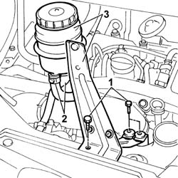

4130B10 POWER STEERING FLUID RESEVOIR R R
- Path
- Procedures > 41 STEERING UNIT > 4130 POWER STEERING > 4130B POWER STEERING HYDRAULIC SYTEM > 4130B10 POWER STEERING FLUID RESEVOIR R R
- Kind
- repair procedure (removal / refitting; the operation number is the code)
- Applies to
- all engines; all production periods
- Interactive page
- https://sloeber94.github.io/elrnDB-fDct/en/#/244001169
Applies to: all engines; all production periods
 Removing
Removing
 Refitting
Refitting- Draw off the fluid in the power assisted steering fluid reservoir.
1. Undo the bolts securing the power steering fluid reservoir bracket.
2. Disconnect the fluid pipes from the reservoir.
3. Remove the power assisted steering fluid reservoir complete with bracket.
- Thoroughly clean any fluid that comes out of the pipes and the reservoir from the bodywork.

Applies to: all engines; all production periods
Refitting
Removing- Fit the power assisted steering fluid reservoir and connect the two pipes to it.
- Tighten the bolts fixing the mounting bracket to the headlamp holder crossmember.
- Refill the power assisted steering system using the appropriate fluid.
 | Description | Qty. | Component | Type | Classification |
|---|---|---|---|---|---|
. | TUTELA GI/A | 1.3 litri | POWER ASSISTED STEERING CIRCUIT | Oil | ATF DEXRON 2 D LEV SAE 10 W |